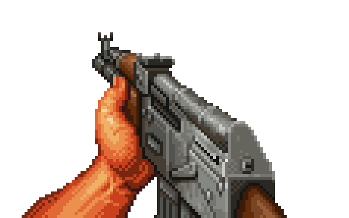

Freedom Fighter!
Score: 0
Levens: 5

Freedom fighter
Bescherm Croux-Town tegen de spionage vogels die tegen vrijheid zijn!
Start Game
The Freedom is to high for you
Score: 0
Opnieuw Spelen
Volume:
Your browser does not support the audio element.
Muziek Aan/Uit